Seated: a frictionless concert ticketing experience
Overview
Seated is a ticketing platform used by thousands of artists — John Legend, Maroon 5, Christina Aguilera, John Mayer, Leon Bridges, Billie Eilish, Harry Styles — and tens of millions of fans. After UENO designed a new brand identity, Seated hired me to bring it across every digital experience.
My role
Sole UX/UI designer. Responsive presale pages, ticket booking flows (light + dark), artist dashboard, emails, design system.
Team
Timeline
Jan – Apr 2020
via Toptal
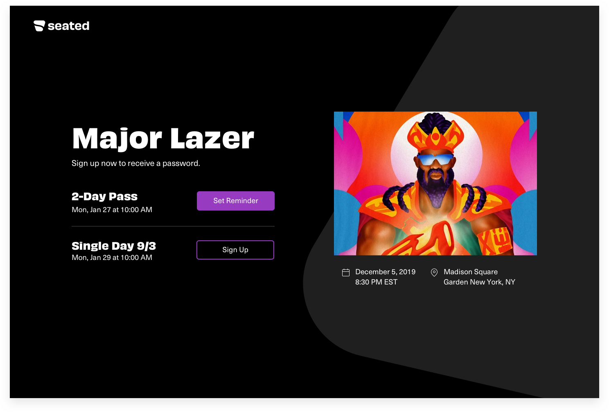
From brand book to product
UENO had given Seated a strong identity: a signature asymmetrical shape, noise-free bold typography, a fluid and adaptive feel. My job was to make it shine across the actual product — the pages fans hit from an artist's Instagram, the four-step booking flow, the dashboard artists use, and the emails that confirm it all.
Deliverables: user and market research, user journeys, responsive web app UI, email UI, and the design system.
Four questions, no friction
Presales are stressful: a password, a countdown, a rush. I rewrote the flow as four plain questions — How many tickets? Where would you like to sit? Who should receive them? Review & submit — with one decision per screen and the artist header always in view, so fans never lose where they are.
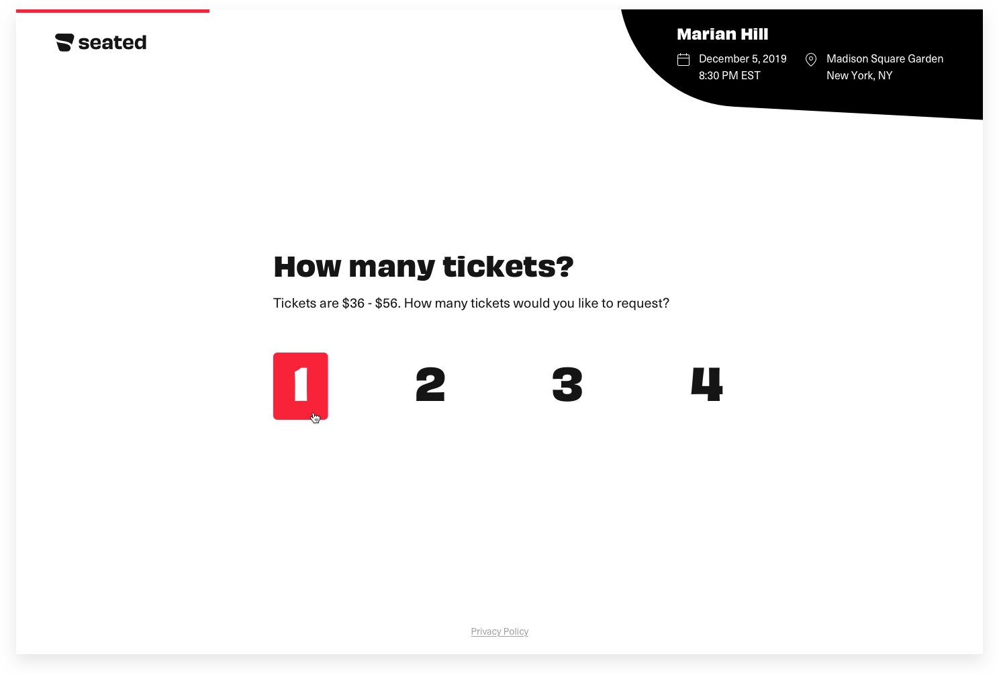
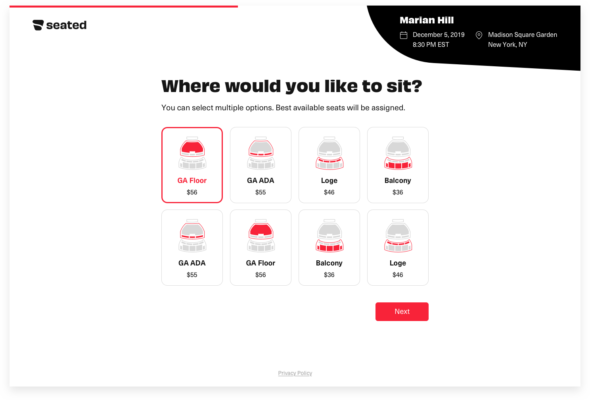
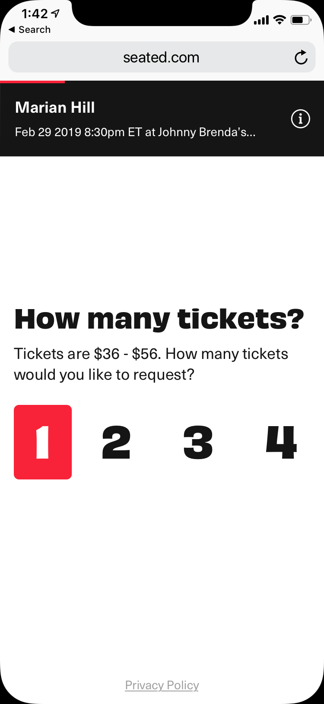
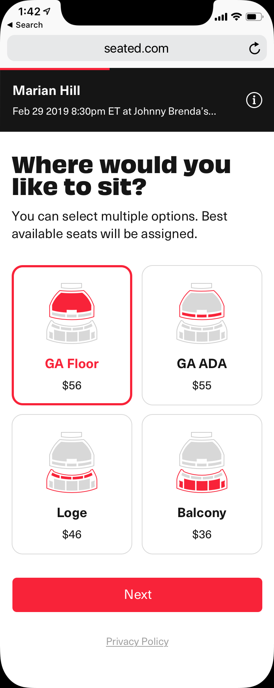
Skip the presale password
The interstitial "Skip the presale password" screen offers AutoBuy: tell us how many, we try to get them for you when sales open. It turned the most anxious moment into an opt-in.
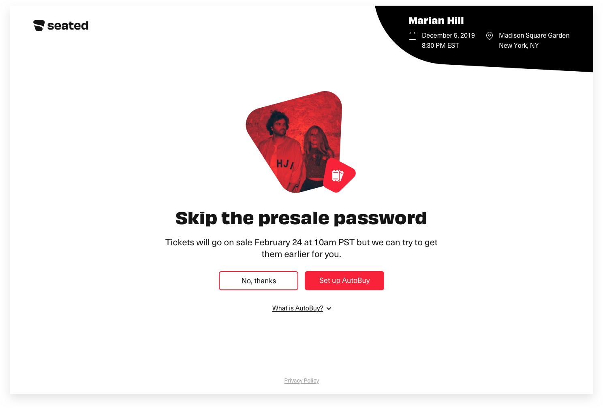
Light and dark — with rules
Artists customise their pages, so every element had to work in a light and a dark theme, over any artwork. I wrote a flowchart of constraints — which element colours are allowed together, what happens when the artist's accent is too close to the background — and designed each screen in both.
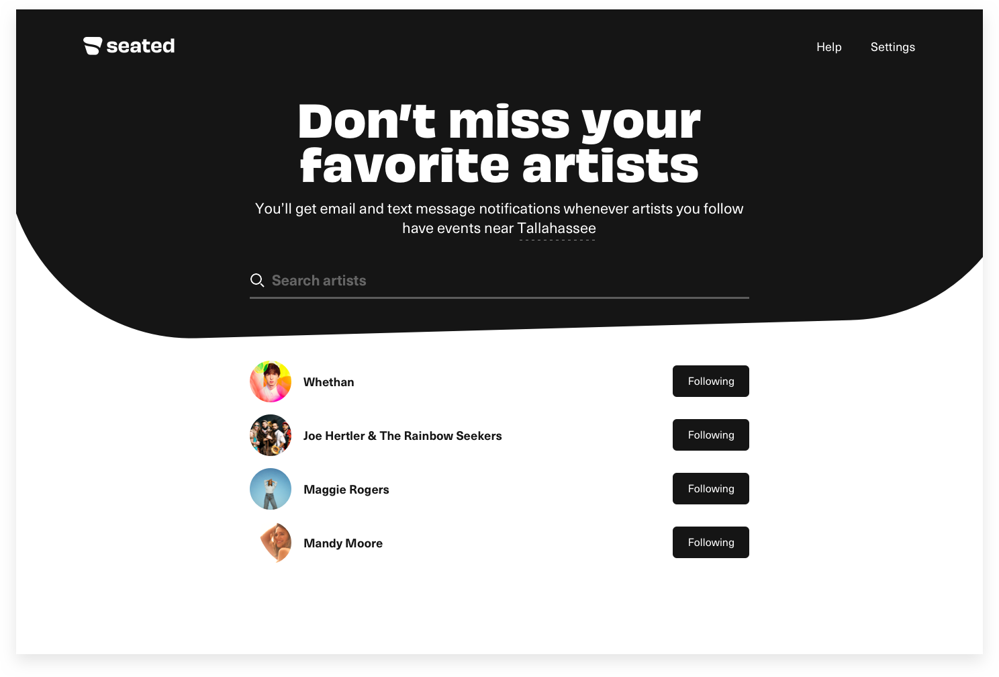
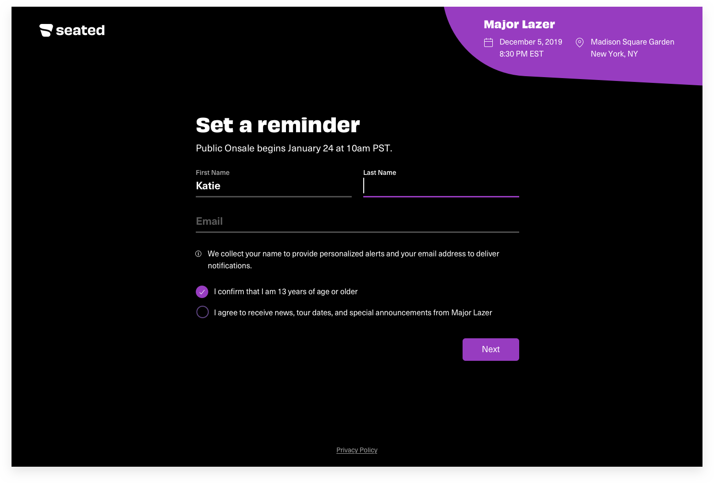
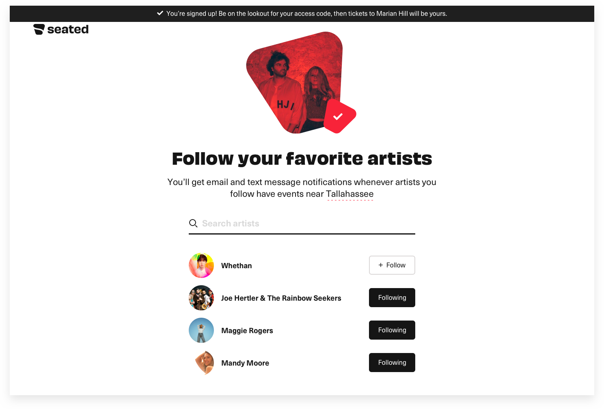
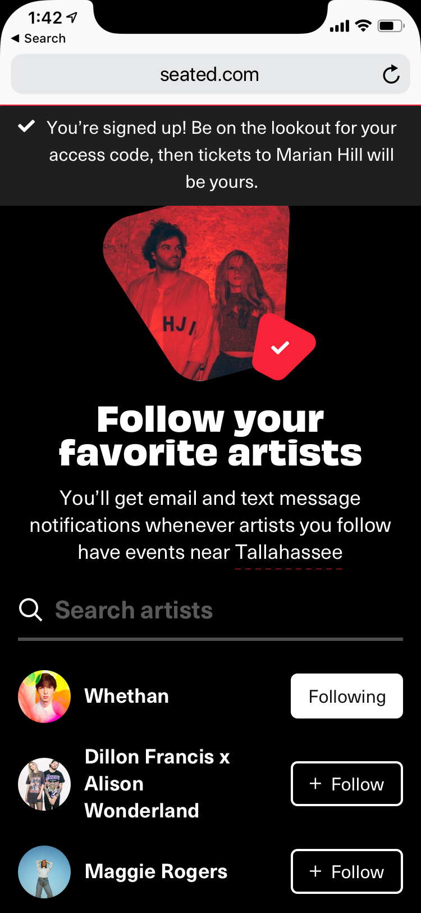
The artist side
Artists manage shows, follow settings, and their map of venues from a dashboard that uses the same system — just denser. Emails carry the brand into the inbox: purchase confirmations and new-event announcements built on the same components.
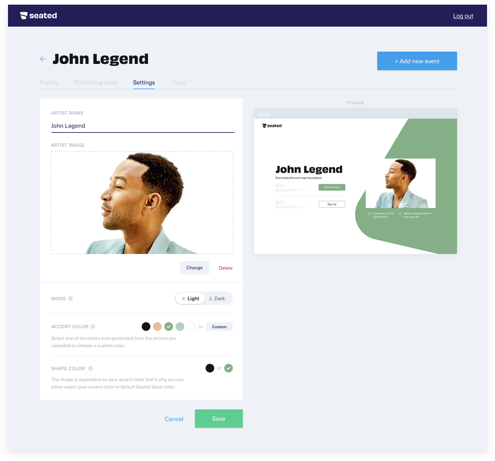
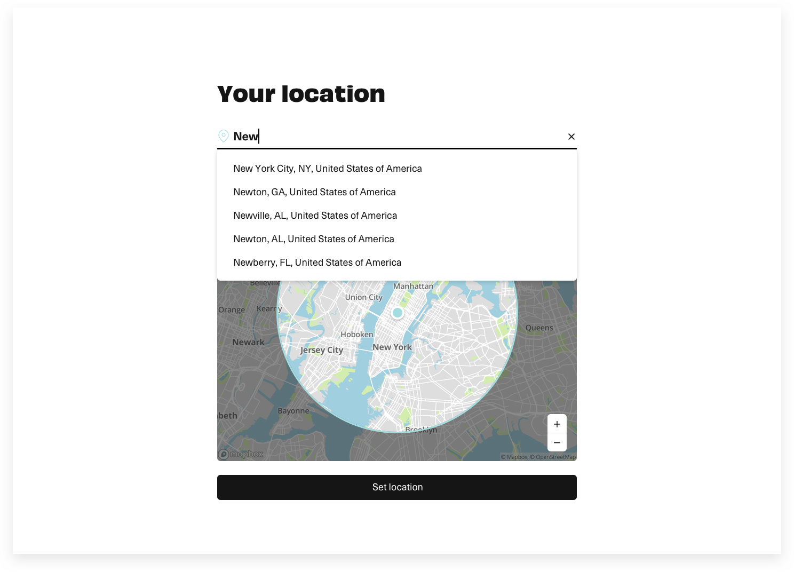
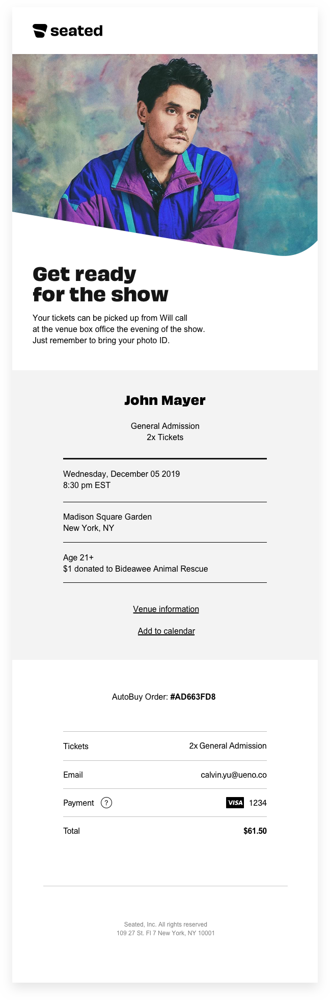
Results
I created a design system and handed it off in Zeplin so engineering could build both themes from one source. Seated was later acquired by Sofar; the platform went on to help artists generate more than $650M in ticket and merch sales.
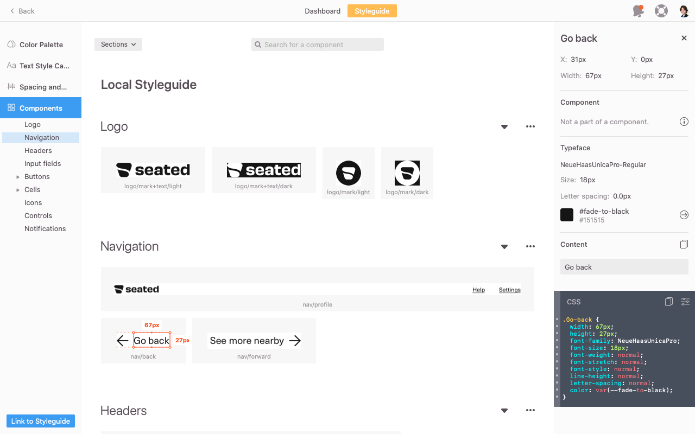
Since artists can customise their pages, the extra challenge was designing everything for light and dark — and writing the rules for how elements work together.Illia, from the original case study notes